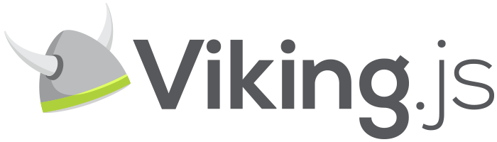

Pillage your servers!
Rails bindings for Backbone.js
Viking.js extends Backbone.js. It adds methods similar to those found in ActiveRecord, ActiveSupport.
Viking.js is hosted on GitHub, and the annotated source code is available, in addition to an online test suite. Viking.js is available for use under the MIT software license.
Please report bugs on the GitHub issues page.
Viking.js is open source tool created for use at 42Floors.
Download v.1.0.0